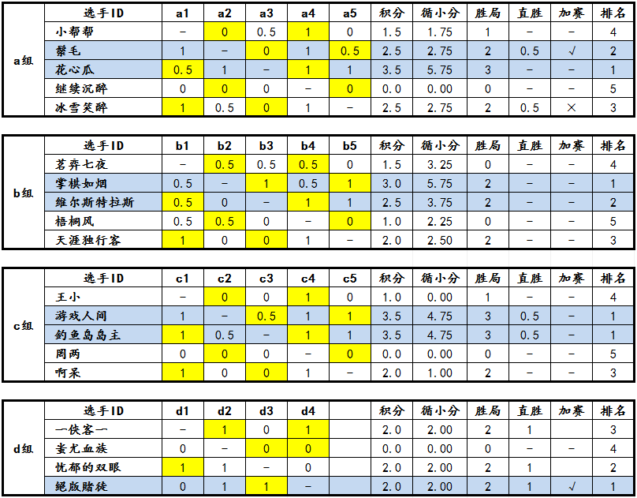

“西北狼”杯第一届博弈规则论坛战8月4日～8月8日战报
#1 “西北狼”杯第一届博弈规则论坛战8月4日～8月8日战报 作者：屏蔽 发表时间：2013-8-9 9:27:08
剩余的三盘加赛已经完成了两盘！
a组最后的加赛，冰雪笑醉在落下白20之后，超过了另一盘鬃毛的取胜手数，也发生了超时。就此，鬃毛淘汰冰雪笑醉后，成功拿到了第二个晋级名额！d组的加赛中，一侠客一落子至白40未能战胜对手，宣告了絕版賭徒正式晋级决赛，而忧郁的双眼47手力克一侠客一，则站到了第二有利的位置上。目前最后的加赛已经进行至26手，是一侠客一在47手之前取胜将忧郁的双眼淘汰？还是与对手继续纠缠直至淘汰？一切都是未知数。最后的对局！最后的名额！让我们共同关注！
分组对阵积分表根据裁判员的判罚，在每天上午更新。论坛战战报每隔5天发布一次。比赛奖励将按照实际情况随时发放，请各位选手注意查收。
